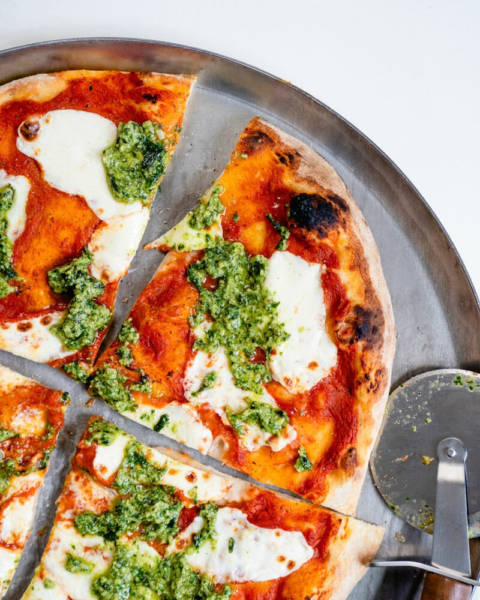

Pizza

Truly italian pizza - O.G. style
Want to make real Italian pizza at home?
Want to make the best homemade pizza crust and pizza sauce?
Want to bake it just right on a blazing hot pizza stone?
We’ll show you how to do it all. Let’s make Italian pizza together!
Ingredients
- 1 ball pizza dough
- 1/3 cup pizza sauce
- ¾ cup shredded mozzarella cheese or 2 to 3 ounces fresh mozzarella
- 3 tablespoons Basil Pesto
- Semolina flour or cornmeal, for dusting the pizza peel
Steps
- Place a pizza stone in the oven and preheat to 500°F
- Prepare the cheese: If using fresh mozzarella cheese, slice it into ¼ inch thick pieces (see the photo). If it’s incredibly watery fresh mozzarella (all brands vary), you may want to let it sit on a paper towel
- Bake the pizza: When the oven is ready, dust a pizza peel with cornmeal or semolina flour. Stretch the dough into a circle. Then gently place the dough onto the pizza peel
- Spread the pizza sauce over the dough using the back of a spoon to create a thin layer. Add the mozzarella cheese. Top with a few pinches of kosher salt.
- Use the pizza peel to carefully transfer the pizza onto the preheated pizza stone. Bake the pizza until the cheese and crust are nicely browned, about 5 to 7 minutes in the oven (or 1 minute in a pizza oven)
- Dollop with the basil pesto. Slice into pieces and serve immediately.
Pro Tip
If you can, use great flour (Tipo 00). The flour we use is called Tipo 00 flour; it’s what Neapolitan pizza restaurants use. It makes for a beautiful, supple and fluffy dough.